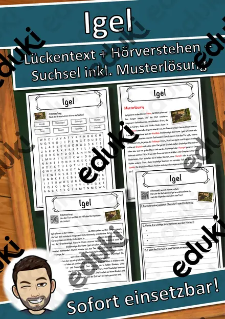

Igel und Winterschlaf: Arbeitsblätter für Klasse 1–4 (Sachunterricht)
Wie überleben Tiere die kalte Jahreszeit? Der Igel ist das bekannteste Beispiel und führt zu Winterschlaf, Winterruhe und Winterstarre. Das Thema passt in den Herbst und in den Winter der Klassen 1 bis 4.
Zum Themenkern zählen Winterschlaf, Winterruhe und Fettreserve. Als Vertiefung bieten sich Laubnest und Nahrung im Herbst an, am Ende steht oft Igelhilfe.
Die Lehrpläne der Länder sehen das Thema im Fach Sachunterricht vor, in der Regel in der Grundschule. Als Ziel gilt: die Kinder erklären, warum der Igel schläft, und unterscheiden Winterschlaf von Winterruhe.
Für den Einstieg in Igel und Winterschlaf bieten sich Aufgaben zu Winterschlaf an, zum Üben solche zu Winterruhe und Fettreserve, zur Wiederholung vor einer Lernkontrolle ein Blick auf Igelhilfe. Die Lösungen liegen bei, sodass im Unterricht niemand nachschlagen muss. Zur Differenzierung eignen sich die Lesespurgeschichten mit ihren drei Niveaustufen.
Zum Thema finden Sie 7 Materialien, unter anderem Rechenmosaik Igel, Lesespaziergang Tiere im Winter: Pit, der Igel und Igel im Laubnest, verteilt auf 1 Lesespurgeschichte, 2 Lesespaziergänge, 1 Bastelvorlage und 2 Lückentexte mit Hörverstehen in Klasse 1–5. Das Nest-Bauen mit echtem Laub und Zweigen im Schulgarten macht Igelhilfe konkret.
Das gehört zum Thema
Passende Arbeitsblätter und Materialpakete

Lesespaziergang Tiere im Winter: Pit, der Igel, sucht ein Bett – 8 Stationen in 3 Lesestufen mit Hörfassung (Klasse 1–2, DaZ)

Igel im Laubnest – Klappnest basteln mit Sachtext Winterschlaf, 3-fach differenziert (Tiere im Herbst, Klasse 1/2)

Lesespaziergang: Igel im Herbst – 3-fach differenziert (★/★★/★★★), Klasse 2–4

Die Igel-Auffangstation – Lesespurgeschichte mit Rätselaufgaben (Klasse 3)

Igel Lückentext mit Wortspeicher Hörverstehen und Suchsel

Murmeltiere Lückentext mit Wortspeicher Hörverstehen und Suchsel

Rechenmosaik Igel – GRATIS-Sampler: Einmaleins lösen, kleben, ausmalen in 3 Stufen (Klasse 2–3)
Häufige Fragen
Für welche Klassenstufe passen die Arbeitsblätter zu Igel und Winterschlaf?
Passend sind Klasse 1–5. Von den 7 Titeln wenden sich die meisten an Klasse 2, einige lassen sich differenzierend auch in benachbarten Stufen nutzen.
Welche Inhalte decken die Materialien zu Igel und Winterschlaf ab?
Behandelt werden unter anderem Winterschlaf, Winterruhe, Fettreserve und Laubnest. Welche Aspekte in Ihrer Klasse Vorrang haben, richtet sich nach dem Lehrplan Ihres Bundeslandes.
Wie setze ich Igel und Winterschlaf im Unterricht ein?
Das Nest-Bauen mit echtem Laub und Zweigen im Schulgarten macht Igelhilfe konkret. Danach genügt meist ein Material als Einstieg und eines zum Üben.
Mehr Material nach Fach und Klasse
Verwandte Lehrplanthemen
- Jahreszeiten (Sachunterricht, Klasse 1–4)
- Bauernhof und Nutztiere (Sachunterricht, Klasse 1–4)
- Berufe und Berufswahl (Sachunterricht, Klasse 1–10)
- Dinosaurier und Urzeit (Sachunterricht, Klasse 1–5)
- Geld und Konsum (Sachunterricht, Klasse 2–10)